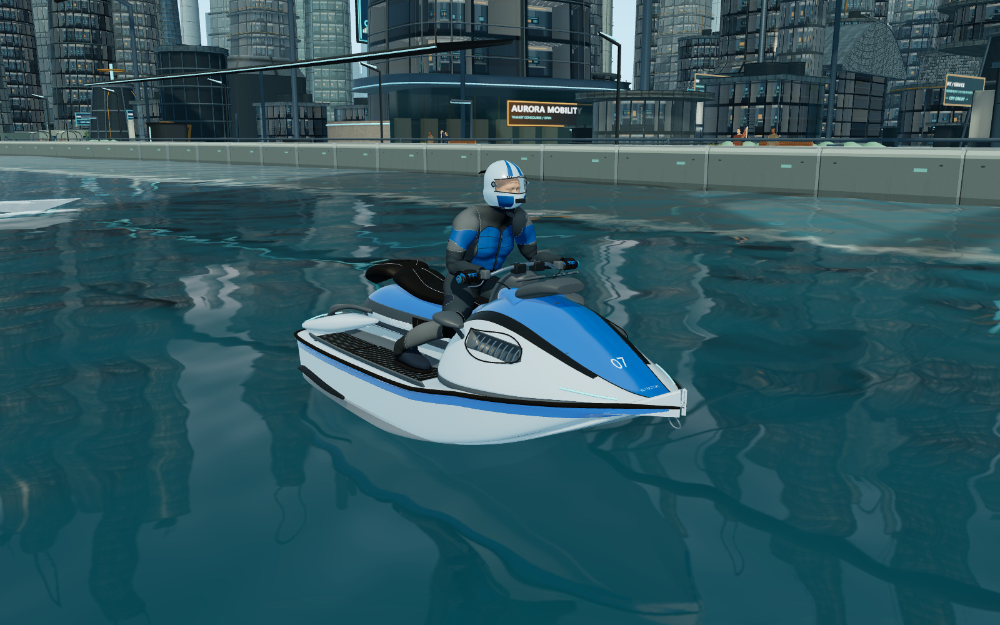
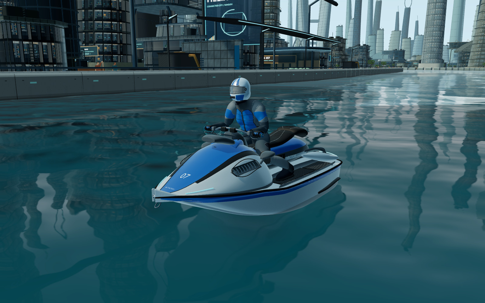
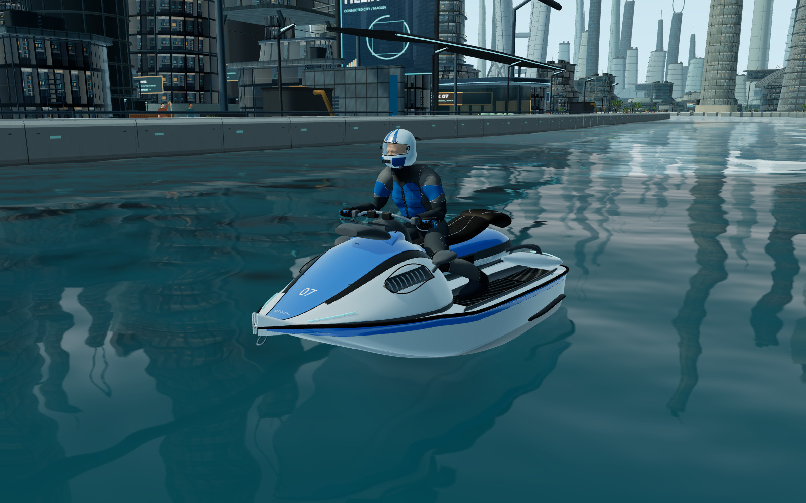

FINAL VISUAL FINISH / 2026.10.25熟悉的赛道，
熟悉的赛道，
更完整的竞速质感。
本轮保留玩法、驾驶、地图与多人协议，精修快艇装配、车手材质、水面特效和整套界面。以下全部为真实游戏画面，点击图片可查看大图。

同视角对照
拖动分隔线比较。左为本轮前的版本，右为精修版本；保留同一资源、机位和质量设置。


逐项验收图集
性能对照：仍需稳定性复测
本机 RTX 4060 Laptop，Edge，1600×1000、DPR1、桌面标准画质。每轮独立启动/关闭 Edge，交替测试两轮修改前后版本，每场景预热 180 帧、记录 240 帧。没有同时录制视频或运行其他 GPU 验收。
性能稳定性尚未通过最终验收。 重复测试中，系统可用内存一度仅约 15–60 MB，原版和新版都出现长帧。下面完整保留最终轮次结果，不把波动当作确定收益或归因结论。请结合完整报告中的其他轮次查看。
| 场景 | 原版 FPS | 新版 FPS | 变化 | GPU 毫秒 |
|---|---|---|---|---|
| 普通驾驶 | 45.0 | 32.9 | -26.8% | 20.15 → 28.70 |
| 商务区五艇 | 25.3 | 27.1 | 7.2% | 39.70 → 34.19 |
| 高架五艇 | 34.2 | 23.1 | -32.3% | 28.25 → 36.62 |
| 氮气五艇 | 35.6 | 24.8 | -30.4% | 27.89 → 33.14 |
反射仍为 1024，水面网格仍为 320，城市阴影仍为 2048；原高模与贴图保留。四组回放的车辆物理终态与检查点进度逐项一致。此结果仅代表本机这些场景，不代表所有电脑和手机。
查看完整测量数据已完成与保留的边界
- 快艇推进口、脚踏紧固、仪表边框与车手头盔细节并入原有模型材质组；未增加模型绘制组。
- 船漆清漆层、金属、橡胶、织物、头盔和面罩分别调整，保留原贴图、UV 与队伍颜色。
- 氮气亮芯/流动外喷流、方向水滴、破碎尾浪、落水压力环和短暂水冠；不增加原水滴容量。
- 街区色材、花箱叶片、维护设施装配、日光方向以及 HUD/首页/加载界面统一。
- 248 项功能测试、13 项 Workers 测试、完整三圈实机与七种触控尺寸回归。详见验收报告。
仍有短板：车手的局部服装接缝和肩部体块、近距离市民、部分建筑重复度，以及单平面反射与小规模粒子效果的表现上限。本轮没有宣称完成电影级人物或流体模拟；高精度五艇同屏也仍是较重场景。